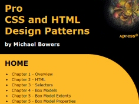

Wskazówki i tematy pomocy można wyświetlać na wyskakującej warstwie.
 Zawartość wyskakującej warstwy.
Zawartość wyskakującej warstwy.
Na wyskakującej warstwie można też umieścić definicję
słowa.
Definicja słowa.
Na wyskakującej warstwie można wyświetlić podgląd
hiperłącza.